Sweden (1947-2000), selective episodes
Loading details
source("0__helpers.R")
opts_chunk$set(warning=TRUE, cache = FALSE,tidy=FALSE,dev=c('png'),fig.width=20,fig.height=12.5)
make_path = function(file) {
get_coefficient_path(file, "swed")
}
# options for each chunk calling knit_child
opts_chunk$set(warning=FALSE, message = FALSE, echo = FALSE)Analysis description
Data subset
The swed_subset_survival.1 dataset contains only those participants where paternal age is known and birth years are from 1969 to 2000. We use it for the analyses pertaining to survival. We randomly sampled 100,000 families from the whole dataset.
The swed_subset_children.1 dataset contains only those participants where paternal age is known and birth years are from 1947 to 1959. We use it for the analyses pertaining to marriage, divorce and reproductive success. We randomly sampled 100,000 families from the whole dataset.
Model description
All of the following models have the following in common:
Estimation
We fit all models using brms v. 1.2.0, a Bayesian regression analysis statistical package. brms uses Stan, a probabilistic programming langugage to fit models using Hamiltonian Monte Carlo.
Covariates
As in our main models we adjust for average paternal age in the family, birth cohort (birth years in five equally large bins), for male sex, for age at paternal and maternal loss (0-1, 2-5, 6-10, …, 41-45, 45+, unknown), for maternal age (bins of 14-20, 20-35 and 35-50), for the number of siblings, for the number of older siblings (0-5, 5+) and for being last born.
Model stratification
We added random intercepts for each family (father-mother dyad). We then controlled for the average paternal age in the family. Hence, the paternal age effects in the plot are split into those between families and those within families or between siblings. We are interested in the effect of paternal age between siblings, as this effect cannot be explained by e.g. genetic propensities of the father to reproduce late.
e1: Survival to first year
Here, we predict the probability that the anchor survives the first year of life. All children born to this father are compared, if their death date is known or their survival can be inferred (from later marriage or children).
Model summary
Full summary
model_summary = summary(model, use_cache = FALSE, priors = TRUE)
print(model_summary)## Family: bernoulli (cauchit)
## Formula: survive1y ~ paternalage + birth_cohort + male + maternalage.factor + paternalage.mean + paternal_loss + maternal_loss + older_siblings + nr.siblings + last_born + (1 | idParents)
## Data: model_data (Number of observations: 363744)
## Samples: 6 chains, each with iter = 1000; warmup = 500; thin = 1;
## total post-warmup samples = 3000
## WAIC: Not computed
##
## Priors:
## b ~ normal(0,5)
## sd ~ student_t(3, 0, 5)
##
## Group-Level Effects:
## ~idParents (Number of levels: 200000)
## Estimate Est.Error l-95% CI u-95% CI Eff.Sample Rhat
## sd(Intercept) 21.41 0.8 19.76 22.96 205 1.03
##
## Population-Level Effects:
## Estimate Est.Error l-95% CI u-95% CI Eff.Sample
## Intercept 96.06 4.72 87.17 105.59 463
## paternalage -10.72 1.94 -14.50 -6.88 488
## birth_cohort1970M1975 -5.41 1.94 -9.34 -1.77 251
## birth_cohort1975M1980 -3.12 2.00 -7.06 0.75 317
## birth_cohort1980M1985 4.66 2.20 0.36 8.89 405
## birth_cohort1985M1990 3.90 2.14 -0.41 8.23 327
## birth_cohort1990M1995 5.97 2.20 1.72 10.42 361
## birth_cohort1995M2000 14.75 3.05 8.92 20.72 368
## male1 -4.69 1.00 -6.73 -2.73 337
## maternalage.factor1420 0.42 2.18 -3.58 4.93 578
## maternalage.factor3561 -4.91 1.75 -8.19 -1.47 753
## paternalage.mean 10.23 2.04 6.20 14.17 665
## paternal_loss01 0.33 4.99 -9.73 10.01 3000
## paternal_loss15 -5.30 4.50 -13.41 4.04 1098
## paternal_loss510 3.95 4.33 -4.09 12.77 1661
## paternal_loss1015 3.54 3.74 -3.41 11.17 1277
## paternal_loss1520 -3.51 2.94 -8.89 2.43 708
## paternal_loss2025 -2.70 2.99 -8.26 3.67 464
## paternal_loss2530 0.87 2.68 -4.04 6.38 907
## paternal_loss3035 2.02 2.93 -3.34 7.97 514
## paternal_loss3540 -4.42 2.66 -9.17 1.01 819
## paternal_loss4045 -1.32 4.98 -10.96 8.96 3000
## maternal_loss01 -5.21 5.62 -16.28 5.58 765
## maternal_loss15 1.90 4.72 -7.17 11.19 3000
## maternal_loss510 1.54 4.54 -6.87 10.56 3000
## maternal_loss1015 -0.35 4.18 -8.03 8.20 1203
## maternal_loss1520 -6.18 3.25 -12.29 0.52 941
## maternal_loss2025 -6.09 3.05 -11.88 0.33 951
## maternal_loss2530 -4.50 3.09 -10.11 1.93 978
## maternal_loss3035 -2.91 3.27 -9.07 3.99 792
## maternal_loss3540 -1.60 3.96 -8.63 6.56 848
## maternal_loss4045 0.97 4.70 -8.54 10.14 3000
## older_siblings1 -6.34 1.37 -9.06 -3.75 249
## older_siblings2 0.01 2.01 -3.87 3.98 147
## older_siblings3 14.49 2.50 9.72 19.44 326
## older_siblings4 16.49 2.71 11.00 21.83 602
## older_siblings5P 25.63 3.53 18.62 32.67 625
## nr.siblings -7.96 0.40 -8.76 -7.19 420
## last_born1 -12.79 1.02 -14.73 -10.83 245
## Rhat
## Intercept 1.01
## paternalage 1.01
## birth_cohort1970M1975 1.01
## birth_cohort1975M1980 1.01
## birth_cohort1980M1985 1.00
## birth_cohort1985M1990 1.01
## birth_cohort1990M1995 1.01
## birth_cohort1995M2000 1.01
## male1 1.02
## maternalage.factor1420 1.01
## maternalage.factor3561 1.01
## paternalage.mean 1.01
## paternal_loss01 1.00
## paternal_loss15 1.00
## paternal_loss510 1.00
## paternal_loss1015 1.00
## paternal_loss1520 1.01
## paternal_loss2025 1.01
## paternal_loss2530 1.01
## paternal_loss3035 1.01
## paternal_loss3540 1.01
## paternal_loss4045 1.00
## maternal_loss01 1.00
## maternal_loss15 1.00
## maternal_loss510 1.00
## maternal_loss1015 1.00
## maternal_loss1520 1.00
## maternal_loss2025 1.01
## maternal_loss2530 1.00
## maternal_loss3035 1.00
## maternal_loss3540 1.01
## maternal_loss4045 1.00
## older_siblings1 1.02
## older_siblings2 1.06
## older_siblings3 1.02
## older_siblings4 1.01
## older_siblings5P 1.01
## nr.siblings 1.01
## last_born1 1.03
##
## Samples were drawn using sampling(NUTS). For each parameter, Eff.Sample
## is a crude measure of effective sample size, and Rhat is the potential
## scale reduction factor on split chains (at convergence, Rhat = 1).Table of fixed effects
fixed_eff = data.frame(model_summary$fixed, check.names = F)
fixed_eff$Est.Error = fixed_eff$Eff.Sample = fixed_eff$Rhat = NULL
fixed_eff$OR = exp(fixed_eff$Estimate)
fixed_eff$OR_low = exp(fixed_eff$`l-95% CI`)
fixed_eff$OR_high = exp(fixed_eff$`u-95% CI`)
pander::pander(fixed_eff)| Estimate | l-95% CI | u-95% CI | OR | OR_low | OR_high | |
|---|---|---|---|---|---|---|
| Intercept | 96.06 | 87.17 | 105.6 | 5.236e+41 | 7.169e+37 | 7.219e+45 |
| paternalage | -10.72 | -14.5 | -6.876 | 2.215e-05 | 5.064e-07 | 0.001033 |
| birth_cohort1970M1975 | -5.409 | -9.344 | -1.769 | 0.004475 | 8.75e-05 | 0.1705 |
| birth_cohort1975M1980 | -3.117 | -7.06 | 0.7462 | 0.04427 | 0.0008587 | 2.109 |
| birth_cohort1980M1985 | 4.659 | 0.3597 | 8.886 | 105.5 | 1.433 | 7230 |
| birth_cohort1985M1990 | 3.904 | -0.4149 | 8.228 | 49.61 | 0.6604 | 3745 |
| birth_cohort1990M1995 | 5.968 | 1.715 | 10.42 | 390.9 | 5.559 | 33363 |
| birth_cohort1995M2000 | 14.75 | 8.923 | 20.72 | 2556476 | 7504 | 996516331 |
| male1 | -4.693 | -6.735 | -2.734 | 0.009161 | 0.001189 | 0.06493 |
| maternalage.factor1420 | 0.4207 | -3.583 | 4.931 | 1.523 | 0.0278 | 138.5 |
| maternalage.factor3561 | -4.912 | -8.194 | -1.472 | 0.007358 | 0.0002762 | 0.2295 |
| paternalage.mean | 10.23 | 6.197 | 14.17 | 27741 | 491.5 | 1420899 |
| paternal_loss01 | 0.3262 | -9.732 | 10.01 | 1.386 | 5.937e-05 | 22327 |
| paternal_loss15 | -5.304 | -13.41 | 4.044 | 0.004974 | 1.502e-06 | 57.06 |
| paternal_loss510 | 3.951 | -4.088 | 12.77 | 51.97 | 0.01677 | 352889 |
| paternal_loss1015 | 3.542 | -3.406 | 11.17 | 34.55 | 0.03319 | 70655 |
| paternal_loss1520 | -3.514 | -8.889 | 2.433 | 0.02978 | 0.0001379 | 11.39 |
| paternal_loss2025 | -2.7 | -8.257 | 3.67 | 0.06721 | 0.0002594 | 39.27 |
| paternal_loss2530 | 0.8731 | -4.045 | 6.378 | 2.394 | 0.01751 | 588.8 |
| paternal_loss3035 | 2.018 | -3.34 | 7.971 | 7.52 | 0.03542 | 2895 |
| paternal_loss3540 | -4.425 | -9.17 | 1.006 | 0.01198 | 0.0001041 | 2.735 |
| paternal_loss4045 | -1.32 | -10.96 | 8.964 | 0.2672 | 1.741e-05 | 7818 |
| maternal_loss01 | -5.208 | -16.28 | 5.575 | 0.005475 | 8.498e-08 | 263.8 |
| maternal_loss15 | 1.898 | -7.174 | 11.19 | 6.672 | 0.0007666 | 72578 |
| maternal_loss510 | 1.542 | -6.873 | 10.56 | 4.676 | 0.001035 | 38393 |
| maternal_loss1015 | -0.3531 | -8.034 | 8.2 | 0.7025 | 0.0003243 | 3641 |
| maternal_loss1520 | -6.179 | -12.29 | 0.5236 | 0.002073 | 4.595e-06 | 1.688 |
| maternal_loss2025 | -6.093 | -11.88 | 0.3274 | 0.002258 | 6.936e-06 | 1.387 |
| maternal_loss2530 | -4.496 | -10.11 | 1.926 | 0.01115 | 4.053e-05 | 6.861 |
| maternal_loss3035 | -2.908 | -9.073 | 3.989 | 0.05461 | 0.0001147 | 54.01 |
| maternal_loss3540 | -1.598 | -8.632 | 6.563 | 0.2023 | 0.0001782 | 708.5 |
| maternal_loss4045 | 0.9686 | -8.537 | 10.14 | 2.634 | 0.0001961 | 25350 |
| older_siblings1 | -6.344 | -9.063 | -3.752 | 0.001758 | 0.0001159 | 0.02347 |
| older_siblings2 | 0.01168 | -3.867 | 3.979 | 1.012 | 0.02092 | 53.47 |
| older_siblings3 | 14.49 | 9.718 | 19.44 | 1966735 | 16620 | 276670549 |
| older_siblings4 | 16.49 | 11 | 21.83 | 14519530 | 59968 | 3.018e+09 |
| older_siblings5P | 25.63 | 18.62 | 32.67 | 1.348e+11 | 121468561 | 1.54e+14 |
| nr.siblings | -7.964 | -8.763 | -7.185 | 0.0003476 | 0.0001564 | 0.0007578 |
| last_born1 | -12.79 | -14.73 | -10.83 | 2.8e-06 | 3.996e-07 | 1.978e-05 |
Paternal age effect
pander::pander(paternal_age_10y_effect(model))| effect | median_estimate | ci_95 | ci_80 |
|---|---|---|---|
| estimate father 25y | 1 | [1;1] | [1;1] |
| estimate father 35y | 1 | [1;1] | [1;1] |
| percentage change | -0.05 | [-0.06;-0.03] | [-0.06;-0.03] |
| OR/IRR | 0 | [0;0] | [0;0] |
Marginal effect plots
plot.brmsMarginalEffects_shades(
x = marginal_effects(model, re_formula = NA, probs = c(0.025,0.975)),
y = marginal_effects(model, re_formula = NA, probs = c(0.1,0.9)),
ask = FALSE)


Coefficient plot
Coefficient estimates (95% and 80% credibility).
mcmc_intervals(as.matrix(model$fit), regex_pars = "b_[^I]")
mcmc_areas(as.matrix(model$fit), regex_pars = "b")Diagnostics
These plots were made to diagnose misfit and nonconvergence.
Posterior predictive checks
brms::pp_check(model, re_formula = NA, type = "dens_overlay")
brms::pp_check(model, re_formula = NA, type = "hist")
Rhat
Did the 6 chains converge?
stanplot(model, pars = "^b_[^I]", type = 'rhat')Effective sample size by average sample size
stanplot(model, pars = "^b", type = 'ess')Monte Carlo SE
stanplot(model, pars = "^b", type = 'mcse')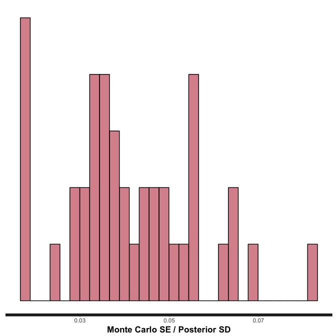
Trace plots
if(any( summary(model)$fixed[,"Rhat"] > 1.1)) { # only do traceplots if not converged
plot(model, N = 3, ask = FALSE)
}Further plots
stanplot(model, pars = "^b", type = 'diag')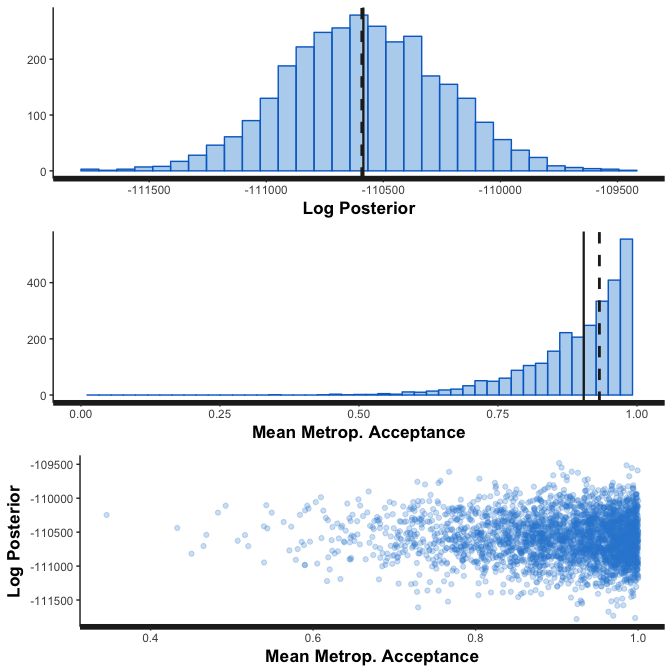
File name
coefs/swed/e1_survive1y.rds
Cluster script
opts_chunk$set(echo = FALSE)
clusterscript = str_replace(basename(model_filename), "\\.rds",".html")
cat("[Cluster script](" , clusterscript, ")", sep = "")e2: Probability of surviving the first 15 years of life
Here, we predict the probability that the anchor survives the first fifteen of life. All children born to this father who lived at least one year are compared, if their death date is known or their survival can be inferred (from later marriage or children).
Model summary
Full summary
model_summary = summary(model, use_cache = FALSE, priors = TRUE)
print(model_summary)## Family: bernoulli (cauchit)
## Formula: surviveR ~ paternalage + birth_cohort + male + maternalage.factor + paternalage.mean + paternal_loss + maternal_loss + older_siblings + nr.siblings + last_born + (1 | idParents)
## Data: model_data (Number of observations: 242223)
## Samples: 6 chains, each with iter = 1500; warmup = 1000; thin = 1;
## total post-warmup samples = 3000
## WAIC: Not computed
##
## Priors:
## b ~ normal(0,5)
## sd ~ student_t(3, 0, 5)
##
## Group-Level Effects:
## ~idParents (Number of levels: 142552)
## Estimate Est.Error l-95% CI u-95% CI Eff.Sample Rhat
## sd(Intercept) 12.03 14.82 0.18 44.82 3 3.16
##
## Population-Level Effects:
## Estimate Est.Error l-95% CI u-95% CI Eff.Sample
## Intercept 164.48 18.24 128.07 198.74 13
## paternalage -1.45 4.31 -9.43 6.83 16
## birth_cohort1970M1975 -5.91 4.58 -14.91 2.93 38
## birth_cohort1975M1980 0.40 4.61 -8.68 9.73 136
## birth_cohort1980M1985 4.10 4.23 -4.18 12.52 3000
## birth_cohort1985M1990 5.10 4.65 -3.67 14.13 23
## male1 -8.81 4.07 -17.11 -0.69 449
## maternalage.factor1420 0.37 4.77 -9.02 9.63 112
## maternalage.factor3561 2.78 4.38 -6.17 11.42 1518
## paternalage.mean -6.09 4.58 -14.76 2.81 18
## paternal_loss01 0.15 4.98 -9.57 10.14 3000
## paternal_loss15 -2.03 5.33 -11.89 8.41 61
## paternal_loss510 -3.53 5.25 -13.97 6.59 23
## paternal_loss1015 -0.60 4.79 -10.00 8.31 3000
## paternal_loss1520 -2.03 4.79 -11.49 7.18 3000
## paternal_loss2025 -1.02 5.09 -10.78 9.00 244
## paternal_loss2530 -0.96 4.78 -9.99 8.84 3000
## paternal_loss3035 -1.09 4.84 -10.80 8.69 3000
## paternal_loss3540 -0.07 5.18 -9.68 9.69 145
## paternal_loss4045 0.10 4.96 -9.51 9.71 3000
## maternal_loss01 0.20 5.22 -10.28 10.09 3000
## maternal_loss15 -1.93 5.28 -12.22 8.06 3000
## maternal_loss510 -2.65 5.26 -12.38 7.57 143
## maternal_loss1015 -1.65 4.98 -11.48 7.88 3000
## maternal_loss1520 -0.03 5.10 -9.89 9.85 3000
## maternal_loss2025 -1.24 5.36 -12.54 9.32 99
## maternal_loss2530 -1.75 4.85 -11.41 7.64 3000
## maternal_loss3035 -1.14 4.89 -10.40 8.51 3000
## maternal_loss3540 -0.76 5.12 -10.77 8.67 216
## maternal_loss4045 -0.67 4.92 -10.22 8.94 3000
## older_siblings1 4.39 4.31 -3.89 12.88 835
## older_siblings2 -1.03 5.32 -12.24 8.81 19
## older_siblings3 -0.28 5.02 -10.10 9.45 59
## older_siblings4 0.04 4.72 -9.62 9.52 3000
## older_siblings5P 1.55 4.91 -7.83 11.28 3000
## nr.siblings -7.16 1.07 -8.87 -4.60 13
## last_born1 7.96 4.37 -0.74 16.56 1761
## Rhat
## Intercept 1.14
## paternalage 1.13
## birth_cohort1970M1975 1.05
## birth_cohort1975M1980 1.03
## birth_cohort1980M1985 1.02
## birth_cohort1985M1990 1.08
## male1 1.02
## maternalage.factor1420 1.03
## maternalage.factor3561 1.01
## paternalage.mean 1.10
## paternal_loss01 1.00
## paternal_loss15 1.06
## paternal_loss510 1.07
## paternal_loss1015 1.01
## paternal_loss1520 1.01
## paternal_loss2025 1.02
## paternal_loss2530 1.01
## paternal_loss3035 1.00
## paternal_loss3540 1.03
## paternal_loss4045 1.00
## maternal_loss01 1.02
## maternal_loss15 1.04
## maternal_loss510 1.04
## maternal_loss1015 1.01
## maternal_loss1520 1.01
## maternal_loss2025 1.05
## maternal_loss2530 1.01
## maternal_loss3035 1.01
## maternal_loss3540 1.03
## maternal_loss4045 1.01
## older_siblings1 1.00
## older_siblings2 1.15
## older_siblings3 1.03
## older_siblings4 1.01
## older_siblings5P 1.01
## nr.siblings 1.23
## last_born1 1.01
##
## Samples were drawn using sampling(NUTS). For each parameter, Eff.Sample
## is a crude measure of effective sample size, and Rhat is the potential
## scale reduction factor on split chains (at convergence, Rhat = 1).Table of fixed effects
fixed_eff = data.frame(model_summary$fixed, check.names = F)
fixed_eff$Est.Error = fixed_eff$Eff.Sample = fixed_eff$Rhat = NULL
fixed_eff$OR = exp(fixed_eff$Estimate)
fixed_eff$OR_low = exp(fixed_eff$`l-95% CI`)
fixed_eff$OR_high = exp(fixed_eff$`u-95% CI`)
pander::pander(fixed_eff)| Estimate | l-95% CI | u-95% CI | OR | OR_low | OR_high | |
|---|---|---|---|---|---|---|
| Intercept | 164.5 | 128.1 | 198.7 | 2.716e+71 | 4.16e+55 | 2.05e+86 |
| paternalage | -1.447 | -9.427 | 6.831 | 0.2353 | 8.053e-05 | 926 |
| birth_cohort1970M1975 | -5.914 | -14.91 | 2.929 | 0.002701 | 3.358e-07 | 18.7 |
| birth_cohort1975M1980 | 0.3976 | -8.68 | 9.731 | 1.488 | 0.0001699 | 16831 |
| birth_cohort1980M1985 | 4.095 | -4.183 | 12.52 | 60.07 | 0.01525 | 273667 |
| birth_cohort1985M1990 | 5.096 | -3.673 | 14.13 | 163.3 | 0.02539 | 1365784 |
| male1 | -8.813 | -17.11 | -0.6904 | 0.0001488 | 3.712e-08 | 0.5014 |
| maternalage.factor1420 | 0.3747 | -9.023 | 9.628 | 1.455 | 0.0001206 | 15183 |
| maternalage.factor3561 | 2.78 | -6.174 | 11.42 | 16.12 | 0.002082 | 90896 |
| paternalage.mean | -6.094 | -14.76 | 2.811 | 0.002257 | 3.904e-07 | 16.63 |
| paternal_loss01 | 0.1468 | -9.571 | 10.14 | 1.158 | 6.971e-05 | 25324 |
| paternal_loss15 | -2.027 | -11.89 | 8.408 | 0.1317 | 6.885e-06 | 4485 |
| paternal_loss510 | -3.528 | -13.97 | 6.591 | 0.02937 | 8.6e-07 | 728.4 |
| paternal_loss1015 | -0.6017 | -9.999 | 8.31 | 0.5479 | 4.546e-05 | 4062 |
| paternal_loss1520 | -2.032 | -11.49 | 7.175 | 0.1311 | 1.023e-05 | 1307 |
| paternal_loss2025 | -1.018 | -10.78 | 9.003 | 0.3613 | 2.081e-05 | 8126 |
| paternal_loss2530 | -0.9557 | -9.986 | 8.838 | 0.3845 | 4.604e-05 | 6894 |
| paternal_loss3035 | -1.087 | -10.8 | 8.688 | 0.3373 | 2.049e-05 | 5931 |
| paternal_loss3540 | -0.07058 | -9.683 | 9.691 | 0.9319 | 6.235e-05 | 16168 |
| paternal_loss4045 | 0.1044 | -9.508 | 9.711 | 1.11 | 7.428e-05 | 16500 |
| maternal_loss01 | 0.1976 | -10.28 | 10.09 | 1.218 | 3.431e-05 | 24157 |
| maternal_loss15 | -1.929 | -12.22 | 8.062 | 0.1454 | 4.919e-06 | 3171 |
| maternal_loss510 | -2.655 | -12.38 | 7.571 | 0.07033 | 4.196e-06 | 1940 |
| maternal_loss1015 | -1.651 | -11.48 | 7.879 | 0.1918 | 1.029e-05 | 2642 |
| maternal_loss1520 | -0.03434 | -9.891 | 9.852 | 0.9662 | 5.065e-05 | 18993 |
| maternal_loss2025 | -1.238 | -12.54 | 9.316 | 0.2899 | 3.571e-06 | 11114 |
| maternal_loss2530 | -1.749 | -11.41 | 7.641 | 0.174 | 1.111e-05 | 2082 |
| maternal_loss3035 | -1.136 | -10.4 | 8.511 | 0.3212 | 3.057e-05 | 4968 |
| maternal_loss3540 | -0.7648 | -10.77 | 8.667 | 0.4654 | 2.105e-05 | 5810 |
| maternal_loss4045 | -0.6703 | -10.22 | 8.935 | 0.5115 | 3.659e-05 | 7595 |
| older_siblings1 | 4.389 | -3.892 | 12.88 | 80.54 | 0.02041 | 390959 |
| older_siblings2 | -1.029 | -12.24 | 8.811 | 0.3574 | 4.841e-06 | 6704 |
| older_siblings3 | -0.2772 | -10.1 | 9.447 | 0.7579 | 4.112e-05 | 12664 |
| older_siblings4 | 0.04359 | -9.618 | 9.52 | 1.045 | 6.655e-05 | 13633 |
| older_siblings5P | 1.552 | -7.827 | 11.28 | 4.723 | 0.0003987 | 79410 |
| nr.siblings | -7.165 | -8.872 | -4.604 | 0.0007735 | 0.0001403 | 0.01001 |
| last_born1 | 7.96 | -0.7404 | 16.56 | 2864 | 0.4769 | 15587840 |
Paternal age effect
pander::pander(paternal_age_10y_effect(model))| effect | median_estimate | ci_95 | ci_80 |
|---|---|---|---|
| estimate father 25y | 1 | [1;1] | [1;1] |
| estimate father 35y | 1 | [1;1] | [1;1] |
| percentage change | 0 | [-0.02;0.01] | [-0.01;0.01] |
| OR/IRR | 0.25 | [0;925.95] | [0;65.49] |
Marginal effect plots
plot.brmsMarginalEffects_shades(
x = marginal_effects(model, re_formula = NA, probs = c(0.025,0.975)),
y = marginal_effects(model, re_formula = NA, probs = c(0.1,0.9)),
ask = FALSE)
Coefficient plot
Coefficient estimates (95% and 80% credibility).
mcmc_intervals(as.matrix(model$fit), regex_pars = "b_[^I]")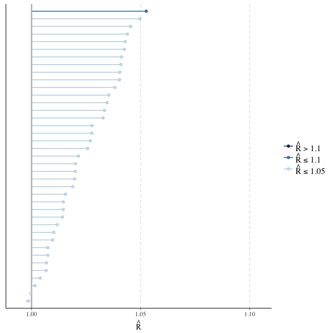
mcmc_areas(as.matrix(model$fit), regex_pars = "b")Diagnostics
These plots were made to diagnose misfit and nonconvergence.
Posterior predictive checks
brms::pp_check(model, re_formula = NA, type = "dens_overlay")
brms::pp_check(model, re_formula = NA, type = "hist")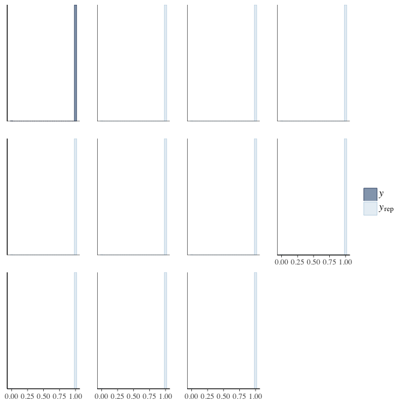
Rhat
Did the 6 chains converge?
stanplot(model, pars = "^b_[^I]", type = 'rhat')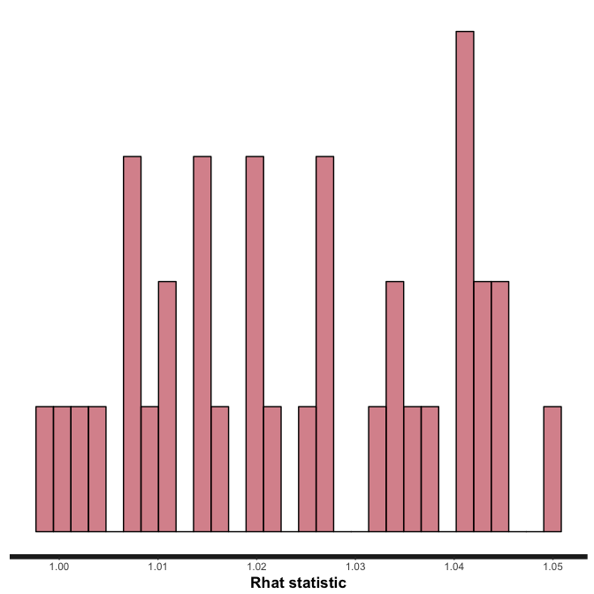
Effective sample size by average sample size
stanplot(model, pars = "^b", type = 'ess')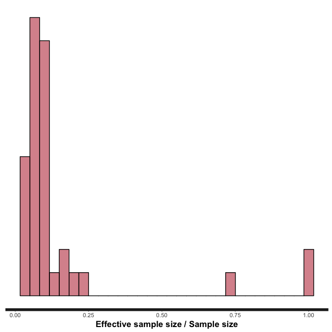
Monte Carlo SE
stanplot(model, pars = "^b", type = 'mcse')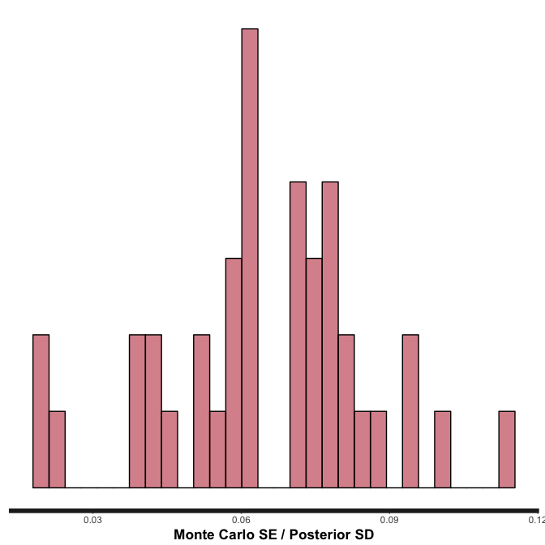
Trace plots
if(any( summary(model)$fixed[,"Rhat"] > 1.1)) { # only do traceplots if not converged
plot(model, N = 3, ask = FALSE)
}
Further plots
stanplot(model, pars = "^b", type = 'diag')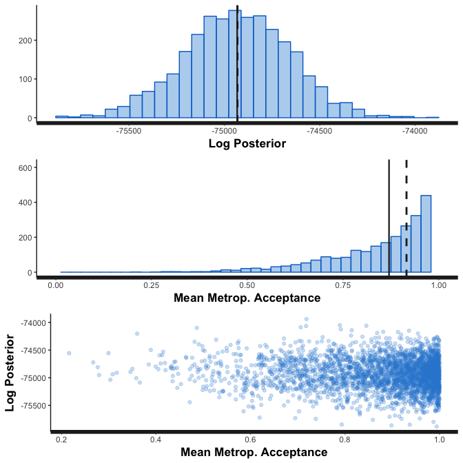
File name
coefs/swed/e2_surviveR.rds
Cluster script
opts_chunk$set(echo = FALSE)
clusterscript = str_replace(basename(model_filename), "\\.rds",".html")
cat("[Cluster script](" , clusterscript, ")", sep = "")e3: Probability of ever marrying
Here, we predict the probability that the anchor ever marries. All anchors who reached reproductive age (15) are included.
Model summary
Full summary
model_summary = summary(model, use_cache = FALSE, priors = TRUE)
print(model_summary)## Family: bernoulli (cauchit)
## Formula: ever_married ~ paternalage + birth_cohort + male + maternalage.factor + paternalage.mean + paternal_loss + maternal_loss + older_siblings + nr.siblings + last_born + (1 | idParents)
## Data: model_data (Number of observations: 1288127)
## Samples: 6 chains, each with iter = 1500; warmup = 1000; thin = 1;
## total post-warmup samples = 3000
## WAIC: Not computed
##
## Priors:
## b ~ normal(0,5)
## sd ~ student_t(3, 0, 5)
##
## Group-Level Effects:
## ~idParents (Number of levels: 825966)
## Estimate Est.Error l-95% CI u-95% CI Eff.Sample Rhat
## sd(Intercept) 0.94 0.01 0.93 0.96 283 1.02
##
## Population-Level Effects:
## Estimate Est.Error l-95% CI u-95% CI Eff.Sample
## Intercept 2.37 0.02 2.33 2.41 1327
## paternalage 0.14 0.02 0.11 0.18 406
## birth_cohort1950M1955 -0.46 0.01 -0.48 -0.45 2063
## birth_cohort1955M1960 -0.86 0.01 -0.87 -0.84 1464
## male1 -0.48 0.01 -0.49 -0.47 3000
## maternalage.factor1420 -0.03 0.01 -0.06 -0.01 2237
## maternalage.factor3561 -0.01 0.01 -0.03 0.01 1899
## paternalage.mean -0.23 0.02 -0.26 -0.19 416
## paternal_loss01 -0.24 0.26 -0.73 0.30 2560
## paternal_loss15 -0.15 0.09 -0.32 0.02 2197
## paternal_loss510 -0.19 0.04 -0.26 -0.12 2309
## paternal_loss1015 -0.20 0.02 -0.24 -0.15 2074
## paternal_loss1520 -0.16 0.02 -0.19 -0.12 1930
## paternal_loss2025 -0.13 0.01 -0.15 -0.10 1852
## paternal_loss2530 -0.10 0.01 -0.12 -0.07 1556
## paternal_loss3035 -0.10 0.01 -0.12 -0.08 1537
## paternal_loss3540 -0.10 0.01 -0.12 -0.08 1579
## paternal_loss4045 -0.07 0.01 -0.10 -0.05 1842
## paternal_lossunclear 0.00 0.01 -0.01 0.02 1633
## maternal_loss01 -0.63 0.26 -1.11 -0.06 1809
## maternal_loss15 -0.34 0.12 -0.57 -0.11 2053
## maternal_loss510 -0.24 0.05 -0.33 -0.13 2146
## maternal_loss1015 -0.20 0.03 -0.26 -0.14 2225
## maternal_loss1520 -0.17 0.03 -0.22 -0.12 2232
## maternal_loss2025 -0.07 0.02 -0.11 -0.03 2108
## maternal_loss2530 -0.10 0.02 -0.13 -0.06 1734
## maternal_loss3035 -0.07 0.01 -0.10 -0.04 2056
## maternal_loss3540 -0.08 0.01 -0.11 -0.05 1942
## maternal_loss4045 -0.05 0.01 -0.08 -0.03 2137
## maternal_lossunclear 0.05 0.01 0.04 0.07 1763
## older_siblings1 -0.01 0.01 -0.03 0.01 506
## older_siblings2 -0.02 0.02 -0.05 0.01 464
## older_siblings3 -0.06 0.02 -0.10 -0.02 449
## older_siblings4 -0.14 0.03 -0.20 -0.08 468
## older_siblings5P -0.23 0.04 -0.30 -0.15 440
## nr.siblings 0.02 0.00 0.01 0.02 439
## last_born1 0.05 0.01 0.04 0.06 3000
## Rhat
## Intercept 1.00
## paternalage 1.01
## birth_cohort1950M1955 1.00
## birth_cohort1955M1960 1.00
## male1 1.00
## maternalage.factor1420 1.00
## maternalage.factor3561 1.00
## paternalage.mean 1.01
## paternal_loss01 1.00
## paternal_loss15 1.00
## paternal_loss510 1.00
## paternal_loss1015 1.00
## paternal_loss1520 1.00
## paternal_loss2025 1.00
## paternal_loss2530 1.00
## paternal_loss3035 1.00
## paternal_loss3540 1.00
## paternal_loss4045 1.00
## paternal_lossunclear 1.00
## maternal_loss01 1.00
## maternal_loss15 1.00
## maternal_loss510 1.00
## maternal_loss1015 1.00
## maternal_loss1520 1.00
## maternal_loss2025 1.00
## maternal_loss2530 1.00
## maternal_loss3035 1.00
## maternal_loss3540 1.00
## maternal_loss4045 1.00
## maternal_lossunclear 1.00
## older_siblings1 1.02
## older_siblings2 1.01
## older_siblings3 1.01
## older_siblings4 1.01
## older_siblings5P 1.01
## nr.siblings 1.01
## last_born1 1.00
##
## Samples were drawn using sampling(NUTS). For each parameter, Eff.Sample
## is a crude measure of effective sample size, and Rhat is the potential
## scale reduction factor on split chains (at convergence, Rhat = 1).Table of fixed effects
fixed_eff = data.frame(model_summary$fixed, check.names = F)
fixed_eff$Est.Error = fixed_eff$Eff.Sample = fixed_eff$Rhat = NULL
fixed_eff$OR = exp(fixed_eff$Estimate)
fixed_eff$OR_low = exp(fixed_eff$`l-95% CI`)
fixed_eff$OR_high = exp(fixed_eff$`u-95% CI`)
pander::pander(fixed_eff)| Estimate | l-95% CI | u-95% CI | OR | OR_low | OR_high | |
|---|---|---|---|---|---|---|
| Intercept | 2.37 | 2.327 | 2.415 | 10.7 | 10.25 | 11.19 |
| paternalage | 0.1446 | 0.1077 | 0.179 | 1.156 | 1.114 | 1.196 |
| birth_cohort1950M1955 | -0.4648 | -0.48 | -0.4495 | 0.6283 | 0.6188 | 0.638 |
| birth_cohort1955M1960 | -0.8567 | -0.8736 | -0.8407 | 0.4246 | 0.4174 | 0.4314 |
| male1 | -0.4825 | -0.4937 | -0.4714 | 0.6172 | 0.6103 | 0.6242 |
| maternalage.factor1420 | -0.0344 | -0.05503 | -0.01391 | 0.9662 | 0.9465 | 0.9862 |
| maternalage.factor3561 | -0.01244 | -0.03067 | 0.00602 | 0.9876 | 0.9698 | 1.006 |
| paternalage.mean | -0.2288 | -0.2646 | -0.192 | 0.7955 | 0.7675 | 0.8253 |
| paternal_loss01 | -0.2392 | -0.7293 | 0.2998 | 0.7873 | 0.4823 | 1.35 |
| paternal_loss15 | -0.1503 | -0.3193 | 0.0231 | 0.8604 | 0.7267 | 1.023 |
| paternal_loss510 | -0.1906 | -0.2582 | -0.1202 | 0.8265 | 0.7724 | 0.8868 |
| paternal_loss1015 | -0.1988 | -0.2415 | -0.1546 | 0.8197 | 0.7855 | 0.8568 |
| paternal_loss1520 | -0.1588 | -0.1929 | -0.1242 | 0.8532 | 0.8246 | 0.8832 |
| paternal_loss2025 | -0.1252 | -0.1544 | -0.09644 | 0.8823 | 0.857 | 0.9081 |
| paternal_loss2530 | -0.09731 | -0.1221 | -0.07281 | 0.9073 | 0.8851 | 0.9298 |
| paternal_loss3035 | -0.1022 | -0.1232 | -0.07946 | 0.9029 | 0.8841 | 0.9236 |
| paternal_loss3540 | -0.09545 | -0.1161 | -0.07558 | 0.909 | 0.8904 | 0.9272 |
| paternal_loss4045 | -0.07498 | -0.09652 | -0.05413 | 0.9278 | 0.908 | 0.9473 |
| paternal_lossunclear | 0.003361 | -0.01228 | 0.01985 | 1.003 | 0.9878 | 1.02 |
| maternal_loss01 | -0.6294 | -1.107 | -0.0634 | 0.5329 | 0.3304 | 0.9386 |
| maternal_loss15 | -0.341 | -0.5681 | -0.1129 | 0.7111 | 0.5666 | 0.8933 |
| maternal_loss510 | -0.2362 | -0.3347 | -0.1276 | 0.7896 | 0.7155 | 0.8802 |
| maternal_loss1015 | -0.1985 | -0.2626 | -0.1353 | 0.8199 | 0.7691 | 0.8734 |
| maternal_loss1520 | -0.1694 | -0.2208 | -0.1166 | 0.8442 | 0.8019 | 0.8899 |
| maternal_loss2025 | -0.07045 | -0.1115 | -0.02702 | 0.932 | 0.8945 | 0.9733 |
| maternal_loss2530 | -0.09506 | -0.1318 | -0.06115 | 0.9093 | 0.8766 | 0.9407 |
| maternal_loss3035 | -0.0705 | -0.09914 | -0.04163 | 0.9319 | 0.9056 | 0.9592 |
| maternal_loss3540 | -0.08012 | -0.1064 | -0.05426 | 0.923 | 0.899 | 0.9472 |
| maternal_loss4045 | -0.05352 | -0.07817 | -0.02824 | 0.9479 | 0.9248 | 0.9722 |
| maternal_lossunclear | 0.05358 | 0.03971 | 0.06738 | 1.055 | 1.041 | 1.07 |
| older_siblings1 | -0.007247 | -0.02571 | 0.01147 | 0.9928 | 0.9746 | 1.012 |
| older_siblings2 | -0.01883 | -0.04982 | 0.01282 | 0.9814 | 0.9514 | 1.013 |
| older_siblings3 | -0.06225 | -0.1049 | -0.01507 | 0.9396 | 0.9004 | 0.985 |
| older_siblings4 | -0.1387 | -0.1962 | -0.07791 | 0.8705 | 0.8218 | 0.9251 |
| older_siblings5P | -0.226 | -0.3025 | -0.1482 | 0.7977 | 0.739 | 0.8622 |
| nr.siblings | 0.01509 | 0.007463 | 0.02251 | 1.015 | 1.007 | 1.023 |
| last_born1 | 0.05165 | 0.04011 | 0.06362 | 1.053 | 1.041 | 1.066 |
Paternal age effect
pander::pander(paternal_age_10y_effect(model))| effect | median_estimate | ci_95 | ci_80 |
|---|---|---|---|
| estimate father 25y | 0.86 | [0.85;0.86] | [0.85;0.86] |
| estimate father 35y | 0.86 | [0.86;0.87] | [0.86;0.87] |
| percentage change | 0.84 | [0.63;1.04] | [0.7;0.97] |
| OR/IRR | 1.16 | [1.11;1.2] | [1.13;1.18] |
Marginal effect plots
plot.brmsMarginalEffects_shades(
x = marginal_effects(model, re_formula = NA, probs = c(0.025,0.975)),
y = marginal_effects(model, re_formula = NA, probs = c(0.1,0.9)),
ask = FALSE) 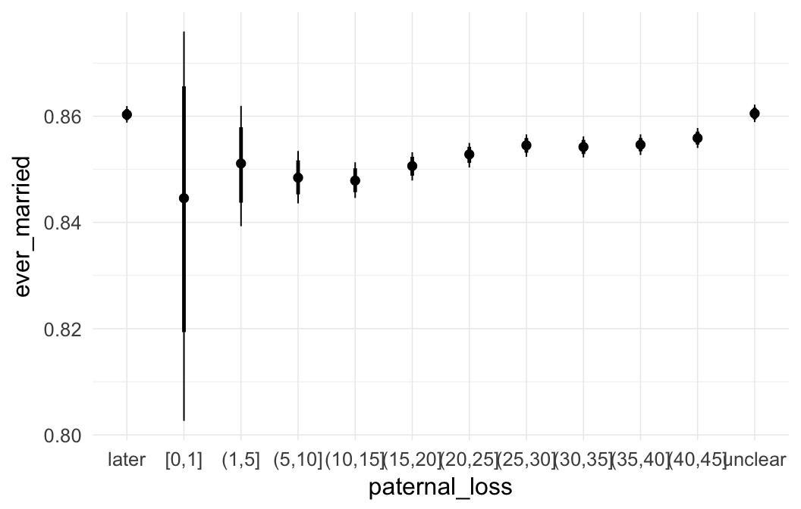
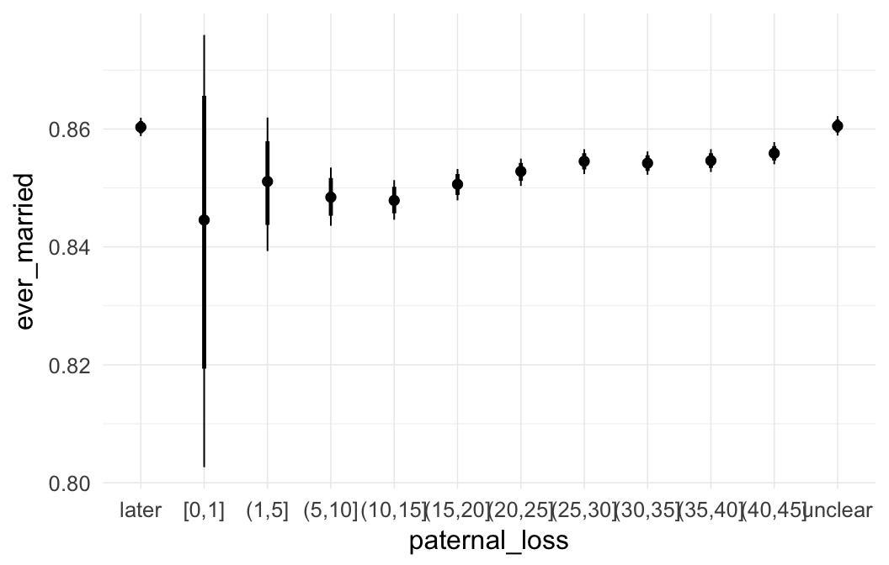
Coefficient plot
Coefficient estimates (95% and 80% credibility).
mcmc_intervals(as.matrix(model$fit), regex_pars = "b_[^I]")mcmc_areas(as.matrix(model$fit), regex_pars = "b")
Diagnostics
These plots were made to diagnose misfit and nonconvergence.
Posterior predictive checks
brms::pp_check(model, re_formula = NA, type = "dens_overlay")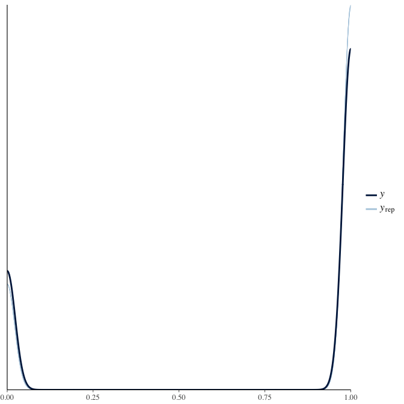
brms::pp_check(model, re_formula = NA, type = "hist")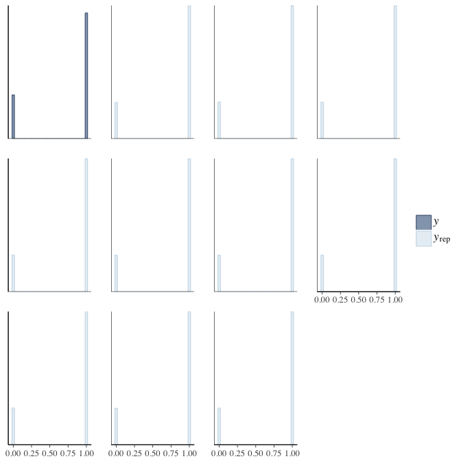
Rhat
Did the 6 chains converge?
stanplot(model, pars = "^b_[^I]", type = 'rhat')Effective sample size by average sample size
stanplot(model, pars = "^b", type = 'ess')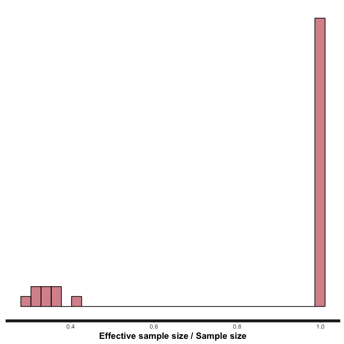
Monte Carlo SE
stanplot(model, pars = "^b", type = 'mcse')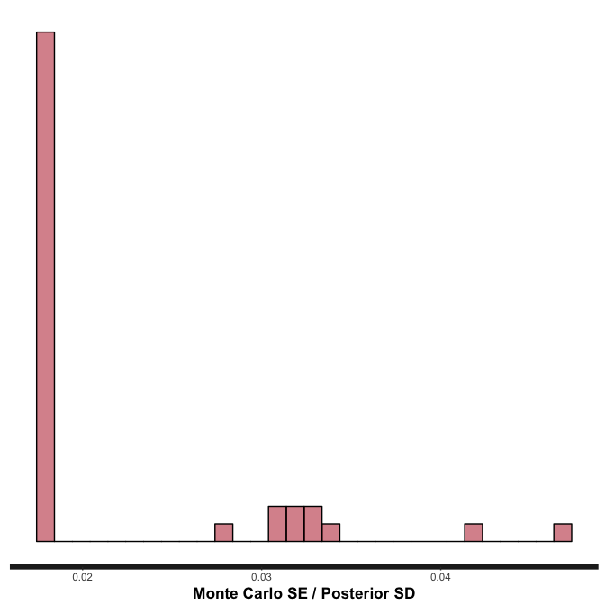
Trace plots
if(any( summary(model)$fixed[,"Rhat"] > 1.1)) { # only do traceplots if not converged
plot(model, N = 3, ask = FALSE)
}Further plots
stanplot(model, pars = "^b", type = 'diag')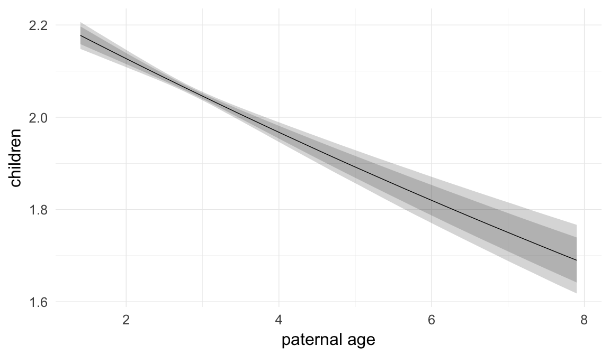
File name
coefs/swed/e3_ever_married.rds
Cluster script
opts_chunk$set(echo = FALSE)
clusterscript = str_replace(basename(model_filename), "\\.rds",".html")
cat("[Cluster script](" , clusterscript, ")", sep = "")e4: Number of children
Here, we predict the number of children that the anchor had. To separate this effect from previous selective episodes, we include only ever-married anchors and control for their number of spouses (interacted with sex, because men tend to have more additional children from further spouses).
Model summary
Full summary
model_summary = summary(model, use_cache = FALSE, priors = TRUE)
print(model_summary)## Family: poisson (log)
## Formula: children ~ paternalage + birth_cohort + spouses * male + maternalage.factor + paternalage.mean + paternal_loss + maternal_loss + older_siblings + nr.siblings + last_born + (1 | idParents)
## Data: model_data (Number of observations: 963305)
## Samples: 6 chains, each with iter = 800; warmup = 300; thin = 1;
## total post-warmup samples = 3000
## WAIC: Not computed
##
## Priors:
## b ~ normal(0,5)
## sd ~ student_t(3, 0, 5)
##
## Group-Level Effects:
## ~idParents (Number of levels: 680792)
## Estimate Est.Error l-95% CI u-95% CI Eff.Sample Rhat
## sd(Intercept) 0 0 0 0 1279 1
##
## Population-Level Effects:
## Estimate Est.Error l-95% CI u-95% CI Eff.Sample
## Intercept 0.57 0.01 0.56 0.58 3000
## paternalage -0.04 0.00 -0.05 -0.03 1883
## birth_cohort1950M1955 0.06 0.00 0.05 0.06 3000
## birth_cohort1955M1960 0.08 0.00 0.08 0.08 3000
## spouses 0.10 0.00 0.09 0.10 3000
## male1 -0.03 0.00 -0.04 -0.03 3000
## maternalage.factor1420 0.03 0.00 0.02 0.03 3000
## maternalage.factor3561 0.01 0.00 0.00 0.01 3000
## paternalage.mean 0.03 0.00 0.02 0.04 1984
## paternal_loss01 0.13 0.07 -0.01 0.27 3000
## paternal_loss15 0.03 0.03 -0.02 0.08 3000
## paternal_loss510 -0.01 0.01 -0.03 0.01 3000
## paternal_loss1015 0.00 0.01 -0.01 0.01 3000
## paternal_loss1520 0.00 0.00 -0.01 0.01 3000
## paternal_loss2025 0.00 0.00 -0.01 0.01 3000
## paternal_loss2530 0.00 0.00 -0.01 0.00 3000
## paternal_loss3035 0.00 0.00 -0.01 0.00 3000
## paternal_loss3540 0.00 0.00 -0.01 0.00 3000
## paternal_loss4045 0.00 0.00 -0.01 0.00 3000
## paternal_lossunclear -0.01 0.00 -0.02 -0.01 3000
## maternal_loss01 -0.06 0.09 -0.24 0.12 1825
## maternal_loss15 0.00 0.04 -0.08 0.07 3000
## maternal_loss510 0.01 0.02 -0.02 0.05 3000
## maternal_loss1015 0.00 0.01 -0.02 0.02 3000
## maternal_loss1520 0.00 0.01 -0.01 0.02 3000
## maternal_loss2025 0.01 0.01 -0.01 0.02 3000
## maternal_loss2530 0.01 0.00 0.00 0.02 3000
## maternal_loss3035 0.00 0.00 0.00 0.01 3000
## maternal_loss3540 0.00 0.00 -0.01 0.01 3000
## maternal_loss4045 0.00 0.00 -0.01 0.00 3000
## maternal_lossunclear 0.00 0.00 0.00 0.00 3000
## older_siblings1 0.01 0.00 0.00 0.01 2105
## older_siblings2 0.01 0.00 0.00 0.02 1795
## older_siblings3 0.01 0.01 0.00 0.02 1843
## older_siblings4 0.00 0.01 -0.01 0.01 1913
## older_siblings5P -0.04 0.01 -0.06 -0.02 1693
## nr.siblings 0.03 0.00 0.03 0.03 1701
## last_born1 0.00 0.00 0.00 0.00 3000
## spouses:male1 0.04 0.00 0.04 0.05 3000
## Rhat
## Intercept 1.00
## paternalage 1.00
## birth_cohort1950M1955 1.00
## birth_cohort1955M1960 1.00
## spouses 1.00
## male1 1.00
## maternalage.factor1420 1.00
## maternalage.factor3561 1.00
## paternalage.mean 1.00
## paternal_loss01 1.00
## paternal_loss15 1.00
## paternal_loss510 1.00
## paternal_loss1015 1.00
## paternal_loss1520 1.00
## paternal_loss2025 1.00
## paternal_loss2530 1.00
## paternal_loss3035 1.00
## paternal_loss3540 1.00
## paternal_loss4045 1.00
## paternal_lossunclear 1.00
## maternal_loss01 1.01
## maternal_loss15 1.00
## maternal_loss510 1.00
## maternal_loss1015 1.00
## maternal_loss1520 1.00
## maternal_loss2025 1.00
## maternal_loss2530 1.00
## maternal_loss3035 1.00
## maternal_loss3540 1.00
## maternal_loss4045 1.00
## maternal_lossunclear 1.00
## older_siblings1 1.00
## older_siblings2 1.00
## older_siblings3 1.00
## older_siblings4 1.00
## older_siblings5P 1.00
## nr.siblings 1.00
## last_born1 1.00
## spouses:male1 1.00
##
## Samples were drawn using sampling(NUTS). For each parameter, Eff.Sample
## is a crude measure of effective sample size, and Rhat is the potential
## scale reduction factor on split chains (at convergence, Rhat = 1).Table of fixed effects
fixed_eff = data.frame(model_summary$fixed, check.names = F)
fixed_eff$Est.Error = fixed_eff$Eff.Sample = fixed_eff$Rhat = NULL
fixed_eff$OR = exp(fixed_eff$Estimate)
fixed_eff$OR_low = exp(fixed_eff$`l-95% CI`)
fixed_eff$OR_high = exp(fixed_eff$`u-95% CI`)
pander::pander(fixed_eff)| Estimate | l-95% CI | u-95% CI | OR | OR_low | OR_high | |
|---|---|---|---|---|---|---|
| Intercept | 0.567 | 0.5553 | 0.5789 | 1.763 | 1.742 | 1.784 |
| paternalage | -0.03755 | -0.04651 | -0.02882 | 0.9631 | 0.9546 | 0.9716 |
| birth_cohort1950M1955 | 0.05581 | 0.05212 | 0.05945 | 1.057 | 1.054 | 1.061 |
| birth_cohort1955M1960 | 0.08071 | 0.07662 | 0.08458 | 1.084 | 1.08 | 1.088 |
| spouses | 0.09622 | 0.09247 | 0.0999 | 1.101 | 1.097 | 1.105 |
| male1 | -0.03388 | -0.04142 | -0.02635 | 0.9667 | 0.9594 | 0.974 |
| maternalage.factor1420 | 0.02975 | 0.02478 | 0.03488 | 1.03 | 1.025 | 1.036 |
| maternalage.factor3561 | 0.007058 | 0.002092 | 0.01218 | 1.007 | 1.002 | 1.012 |
| paternalage.mean | 0.02807 | 0.01915 | 0.03685 | 1.028 | 1.019 | 1.038 |
| paternal_loss01 | 0.1302 | -0.01081 | 0.2677 | 1.139 | 0.9892 | 1.307 |
| paternal_loss15 | 0.02888 | -0.01993 | 0.07916 | 1.029 | 0.9803 | 1.082 |
| paternal_loss510 | -0.006096 | -0.02554 | 0.01343 | 0.9939 | 0.9748 | 1.014 |
| paternal_loss1015 | 0.002888 | -0.008681 | 0.01455 | 1.003 | 0.9914 | 1.015 |
| paternal_loss1520 | 0.003577 | -0.005366 | 0.0122 | 1.004 | 0.9946 | 1.012 |
| paternal_loss2025 | -0.001013 | -0.008015 | 0.00617 | 0.999 | 0.992 | 1.006 |
| paternal_loss2530 | -0.002806 | -0.008892 | 0.00344 | 0.9972 | 0.9911 | 1.003 |
| paternal_loss3035 | -0.0008762 | -0.006192 | 0.004863 | 0.9991 | 0.9938 | 1.005 |
| paternal_loss3540 | -0.001639 | -0.006726 | 0.00327 | 0.9984 | 0.9933 | 1.003 |
| paternal_loss4045 | -0.00446 | -0.009365 | 0.0004975 | 0.9955 | 0.9907 | 1 |
| paternal_lossunclear | -0.0122 | -0.0161 | -0.008498 | 0.9879 | 0.984 | 0.9915 |
| maternal_loss01 | -0.05739 | -0.2408 | 0.1175 | 0.9442 | 0.786 | 1.125 |
| maternal_loss15 | -0.0008556 | -0.07725 | 0.07207 | 0.9991 | 0.9257 | 1.075 |
| maternal_loss510 | 0.01428 | -0.01823 | 0.04533 | 1.014 | 0.9819 | 1.046 |
| maternal_loss1015 | -0.0008308 | -0.01874 | 0.01659 | 0.9992 | 0.9814 | 1.017 |
| maternal_loss1520 | 0.003812 | -0.009444 | 0.01687 | 1.004 | 0.9906 | 1.017 |
| maternal_loss2025 | 0.005645 | -0.005468 | 0.01699 | 1.006 | 0.9945 | 1.017 |
| maternal_loss2530 | 0.006292 | -0.00258 | 0.01543 | 1.006 | 0.9974 | 1.016 |
| maternal_loss3035 | 0.004757 | -0.003006 | 0.01223 | 1.005 | 0.997 | 1.012 |
| maternal_loss3540 | -0.0005004 | -0.006577 | 0.005694 | 0.9995 | 0.9934 | 1.006 |
| maternal_loss4045 | -0.001428 | -0.007701 | 0.004821 | 0.9986 | 0.9923 | 1.005 |
| maternal_lossunclear | -0.0009528 | -0.004294 | 0.002519 | 0.999 | 0.9957 | 1.003 |
| older_siblings1 | 0.008665 | 0.004106 | 0.01308 | 1.009 | 1.004 | 1.013 |
| older_siblings2 | 0.01217 | 0.004694 | 0.01996 | 1.012 | 1.005 | 1.02 |
| older_siblings3 | 0.007891 | -0.003014 | 0.01914 | 1.008 | 0.997 | 1.019 |
| older_siblings4 | -0.0003778 | -0.01497 | 0.01479 | 0.9996 | 0.9851 | 1.015 |
| older_siblings5P | -0.04138 | -0.05996 | -0.02198 | 0.9595 | 0.9418 | 0.9783 |
| nr.siblings | 0.02988 | 0.02807 | 0.0317 | 1.03 | 1.028 | 1.032 |
| last_born1 | 0.001271 | -0.001886 | 0.004298 | 1.001 | 0.9981 | 1.004 |
| spouses:male1 | 0.04489 | 0.03928 | 0.05042 | 1.046 | 1.04 | 1.052 |
Paternal age effect
pander::pander(paternal_age_10y_effect(model))| effect | median_estimate | ci_95 | ci_80 |
|---|---|---|---|
| estimate father 25y | 2.05 | [2.04;2.06] | [2.04;2.05] |
| estimate father 35y | 1.97 | [1.96;1.99] | [1.96;1.98] |
| percentage change | -3.69 | [-4.54;-2.84] | [-4.23;-3.13] |
| OR/IRR | 0.96 | [0.95;0.97] | [0.96;0.97] |
Marginal effect plots
plot.brmsMarginalEffects_shades(
x = marginal_effects(model, re_formula = NA, probs = c(0.025,0.975)),
y = marginal_effects(model, re_formula = NA, probs = c(0.1,0.9)),
ask = FALSE)
Coefficient plot
Coefficient estimates (95% and 80% credibility).
mcmc_intervals(as.matrix(model$fit), regex_pars = "b_[^I]")mcmc_areas(as.matrix(model$fit), regex_pars = "b")
Diagnostics
These plots were made to diagnose misfit and nonconvergence.
Posterior predictive checks
brms::pp_check(model, re_formula = NA, type = "dens_overlay")brms::pp_check(model, re_formula = NA, type = "hist")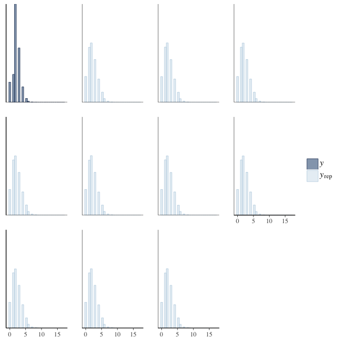
Rhat
Did the 6 chains converge?
stanplot(model, pars = "^b_[^I]", type = 'rhat')Effective sample size by average sample size
stanplot(model, pars = "^b", type = 'ess')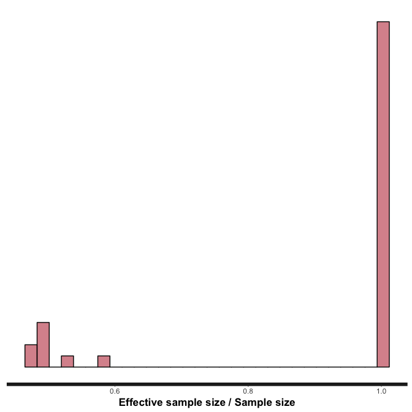
Monte Carlo SE
stanplot(model, pars = "^b", type = 'mcse')
Trace plots
if(any( summary(model)$fixed[,"Rhat"] > 1.1)) { # only do traceplots if not converged
plot(model, N = 3, ask = FALSE)
}Further plots
stanplot(model, pars = "^b", type = 'diag')
File name
coefs/swed/e4_children.rds
Cluster script
opts_chunk$set(echo = FALSE)
clusterscript = str_replace(basename(model_filename), "\\.rds",".html")
cat("[Cluster script](" , clusterscript, ")", sep = "")e5: Probability of ever divorcing
Here, we predict the probability of ever divorcing. To separate this effect from previous selective episodes, we include only ever-married anchors. Divorce data was only analysed in modern Sweden.
Model summary
Full summary
model_summary = summary(model, use_cache = FALSE, priors = TRUE)
print(model_summary)## Family: bernoulli (cauchit)
## Formula: ever_divorced ~ paternalage + birth_cohort + male + maternalage.factor + paternalage.mean + paternal_loss + maternal_loss + older_siblings + nr.siblings + last_born + (1 | idParents)
## Data: model_data (Number of observations: 87135)
## Samples: 6 chains, each with iter = 800; warmup = 300; thin = 1;
## total post-warmup samples = 3000
## WAIC: Not computed
##
## Priors:
## b ~ normal(0,5)
## sd ~ student_t(3, 0, 5)
##
## Group-Level Effects:
## ~idParents (Number of levels: 61627)
## Estimate Est.Error l-95% CI u-95% CI Eff.Sample Rhat
## sd(Intercept) 2.85 0.22 2.43 3.27 101 1.05
##
## Population-Level Effects:
## Estimate Est.Error l-95% CI u-95% CI Eff.Sample
## Intercept -0.87 0.37 -1.61 -0.18 1392
## paternalage -0.08 0.33 -0.71 0.55 818
## birth_cohort1950M1955 -4.21 0.17 -4.55 -3.89 3000
## birth_cohort1955M1960 -7.00 0.38 -7.80 -6.33 3000
## male1 -2.35 0.13 -2.60 -2.10 711
## maternalage.factor1420 0.78 0.17 0.44 1.12 1836
## maternalage.factor3561 -0.28 0.18 -0.65 0.06 1972
## paternalage.mean -0.89 0.33 -1.52 -0.26 805
## paternal_loss01 3.02 5.09 -7.15 11.54 3000
## paternal_loss15 1.82 2.97 -5.66 6.04 1976
## paternal_loss510 -0.97 2.14 -6.16 2.02 1728
## paternal_loss1015 -0.07 0.53 -1.17 0.91 3000
## paternal_loss1520 0.73 0.30 0.15 1.30 3000
## paternal_loss2025 0.74 0.24 0.27 1.20 3000
## paternal_loss2530 0.53 0.21 0.14 0.93 3000
## paternal_loss3035 0.42 0.19 0.04 0.79 2003
## paternal_loss3540 0.15 0.17 -0.20 0.49 3000
## paternal_loss4045 -0.24 0.19 -0.61 0.11 3000
## paternal_lossunclear -0.24 0.16 -0.54 0.07 2140
## maternal_loss01 -2.14 4.18 -11.09 5.11 3000
## maternal_loss15 -3.63 3.62 -11.49 2.56 3000
## maternal_loss510 0.58 2.26 -4.95 3.88 1963
## maternal_loss1015 -0.13 0.80 -1.89 1.31 2230
## maternal_loss1520 0.67 0.39 -0.13 1.40 3000
## maternal_loss2025 0.28 0.35 -0.45 0.93 3000
## maternal_loss2530 0.56 0.28 0.01 1.08 3000
## maternal_loss3035 0.14 0.27 -0.39 0.66 3000
## maternal_loss3540 0.45 0.22 0.02 0.85 2273
## maternal_loss4045 0.14 0.22 -0.31 0.56 3000
## maternal_lossunclear -0.45 0.12 -0.69 -0.21 1941
## older_siblings1 -0.08 0.16 -0.40 0.24 966
## older_siblings2 0.02 0.27 -0.49 0.57 875
## older_siblings3 -0.29 0.41 -1.11 0.49 865
## older_siblings4 0.34 0.52 -0.68 1.37 969
## older_siblings5P -0.12 0.71 -1.50 1.25 869
## nr.siblings 0.07 0.07 -0.06 0.20 840
## last_born1 -0.14 0.11 -0.37 0.08 3000
## Rhat
## Intercept 1.00
## paternalage 1.01
## birth_cohort1950M1955 1.00
## birth_cohort1955M1960 1.00
## male1 1.01
## maternalage.factor1420 1.00
## maternalage.factor3561 1.00
## paternalage.mean 1.01
## paternal_loss01 1.00
## paternal_loss15 1.00
## paternal_loss510 1.00
## paternal_loss1015 1.00
## paternal_loss1520 1.00
## paternal_loss2025 1.00
## paternal_loss2530 1.00
## paternal_loss3035 1.00
## paternal_loss3540 1.00
## paternal_loss4045 1.00
## paternal_lossunclear 1.00
## maternal_loss01 1.00
## maternal_loss15 1.00
## maternal_loss510 1.00
## maternal_loss1015 1.00
## maternal_loss1520 1.00
## maternal_loss2025 1.00
## maternal_loss2530 1.00
## maternal_loss3035 1.00
## maternal_loss3540 1.00
## maternal_loss4045 1.00
## maternal_lossunclear 1.00
## older_siblings1 1.01
## older_siblings2 1.01
## older_siblings3 1.01
## older_siblings4 1.01
## older_siblings5P 1.01
## nr.siblings 1.01
## last_born1 1.00
##
## Samples were drawn using sampling(NUTS). For each parameter, Eff.Sample
## is a crude measure of effective sample size, and Rhat is the potential
## scale reduction factor on split chains (at convergence, Rhat = 1).Table of fixed effects
fixed_eff = data.frame(model_summary$fixed, check.names = F)
fixed_eff$Est.Error = fixed_eff$Eff.Sample = fixed_eff$Rhat = NULL
fixed_eff$OR = exp(fixed_eff$Estimate)
fixed_eff$OR_low = exp(fixed_eff$`l-95% CI`)
fixed_eff$OR_high = exp(fixed_eff$`u-95% CI`)
pander::pander(fixed_eff)| Estimate | l-95% CI | u-95% CI | OR | OR_low | OR_high | |
|---|---|---|---|---|---|---|
| Intercept | -0.8743 | -1.613 | -0.1792 | 0.4171 | 0.1993 | 0.8359 |
| paternalage | -0.08034 | -0.7125 | 0.5467 | 0.9228 | 0.4904 | 1.728 |
| birth_cohort1950M1955 | -4.214 | -4.549 | -3.887 | 0.01479 | 0.01058 | 0.02051 |
| birth_cohort1955M1960 | -7.004 | -7.8 | -6.331 | 0.0009079 | 0.0004097 | 0.00178 |
| male1 | -2.354 | -2.604 | -2.1 | 0.09499 | 0.07399 | 0.1225 |
| maternalage.factor1420 | 0.7779 | 0.4401 | 1.12 | 2.177 | 1.553 | 3.064 |
| maternalage.factor3561 | -0.2792 | -0.6507 | 0.06256 | 0.7564 | 0.5217 | 1.065 |
| paternalage.mean | -0.8882 | -1.524 | -0.2586 | 0.4114 | 0.2178 | 0.7721 |
| paternal_loss01 | 3.018 | -7.153 | 11.54 | 20.44 | 0.0007825 | 102441 |
| paternal_loss15 | 1.817 | -5.662 | 6.037 | 6.153 | 0.003474 | 418.7 |
| paternal_loss510 | -0.9691 | -6.16 | 2.017 | 0.3794 | 0.002112 | 7.513 |
| paternal_loss1015 | -0.07008 | -1.174 | 0.9092 | 0.9323 | 0.3091 | 2.482 |
| paternal_loss1520 | 0.733 | 0.1497 | 1.302 | 2.081 | 1.161 | 3.675 |
| paternal_loss2025 | 0.7398 | 0.2719 | 1.205 | 2.095 | 1.312 | 3.336 |
| paternal_loss2530 | 0.5291 | 0.1365 | 0.931 | 1.697 | 1.146 | 2.537 |
| paternal_loss3035 | 0.4236 | 0.04462 | 0.7899 | 1.527 | 1.046 | 2.203 |
| paternal_loss3540 | 0.1496 | -0.1989 | 0.4943 | 1.161 | 0.8196 | 1.639 |
| paternal_loss4045 | -0.2375 | -0.6062 | 0.1141 | 0.7886 | 0.5454 | 1.121 |
| paternal_lossunclear | -0.2361 | -0.5413 | 0.06571 | 0.7897 | 0.582 | 1.068 |
| maternal_loss01 | -2.143 | -11.09 | 5.11 | 0.1173 | 1.53e-05 | 165.7 |
| maternal_loss15 | -3.634 | -11.49 | 2.558 | 0.02642 | 1.019e-05 | 12.91 |
| maternal_loss510 | 0.579 | -4.949 | 3.88 | 1.784 | 0.007088 | 48.42 |
| maternal_loss1015 | -0.126 | -1.887 | 1.307 | 0.8817 | 0.1515 | 3.696 |
| maternal_loss1520 | 0.6692 | -0.1275 | 1.4 | 1.953 | 0.8803 | 4.053 |
| maternal_loss2025 | 0.2764 | -0.4542 | 0.9311 | 1.318 | 0.635 | 2.537 |
| maternal_loss2530 | 0.5581 | 0.01253 | 1.079 | 1.747 | 1.013 | 2.943 |
| maternal_loss3035 | 0.1447 | -0.3908 | 0.6606 | 1.156 | 0.6765 | 1.936 |
| maternal_loss3540 | 0.4461 | 0.02232 | 0.8528 | 1.562 | 1.023 | 2.346 |
| maternal_loss4045 | 0.1354 | -0.3093 | 0.5614 | 1.145 | 0.734 | 1.753 |
| maternal_lossunclear | -0.4504 | -0.6859 | -0.211 | 0.6374 | 0.5036 | 0.8098 |
| older_siblings1 | -0.08433 | -0.3965 | 0.24 | 0.9191 | 0.6726 | 1.271 |
| older_siblings2 | 0.0233 | -0.488 | 0.5688 | 1.024 | 0.6138 | 1.766 |
| older_siblings3 | -0.2948 | -1.11 | 0.4934 | 0.7447 | 0.3296 | 1.638 |
| older_siblings4 | 0.3395 | -0.6825 | 1.365 | 1.404 | 0.5054 | 3.917 |
| older_siblings5P | -0.1193 | -1.497 | 1.253 | 0.8875 | 0.2238 | 3.501 |
| nr.siblings | 0.07223 | -0.05838 | 0.1972 | 1.075 | 0.9433 | 1.218 |
| last_born1 | -0.1444 | -0.3704 | 0.07942 | 0.8656 | 0.6905 | 1.083 |
Paternal age effect
pander::pander(paternal_age_10y_effect(model))| effect | median_estimate | ci_95 | ci_80 |
|---|---|---|---|
| estimate father 25y | 0.08 | [0.07;0.1] | [0.08;0.09] |
| estimate father 35y | 0.08 | [0.07;0.1] | [0.07;0.09] |
| percentage change | -0.17 | [-1.44;1.31] | [-1.04;0.79] |
| OR/IRR | 0.92 | [0.49;1.73] | [0.6;1.41] |
Marginal effect plots
plot.brmsMarginalEffects_shades(
x = marginal_effects(model, re_formula = NA, probs = c(0.025,0.975)),
y = marginal_effects(model, re_formula = NA, probs = c(0.1,0.9)),
ask = FALSE)Coefficient plot
Coefficient estimates (95% and 80% credibility).
mcmc_intervals(as.matrix(model$fit), regex_pars = "b_[^I]")mcmc_areas(as.matrix(model$fit), regex_pars = "b")Diagnostics
These plots were made to diagnose misfit and nonconvergence.
Posterior predictive checks
brms::pp_check(model, re_formula = NA, type = "dens_overlay")brms::pp_check(model, re_formula = NA, type = "hist")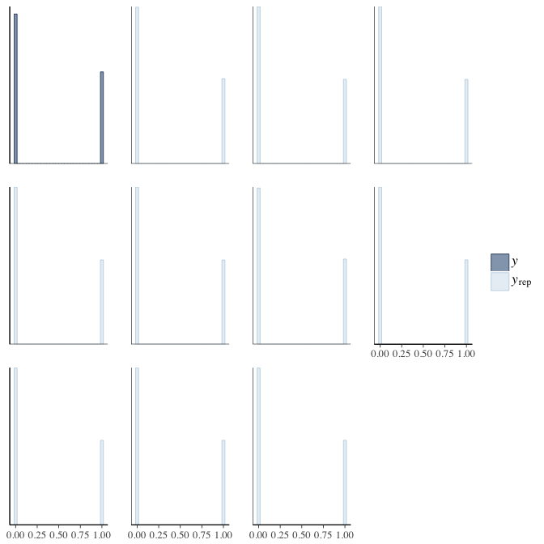
Rhat
Did the 6 chains converge?
stanplot(model, pars = "^b_[^I]", type = 'rhat')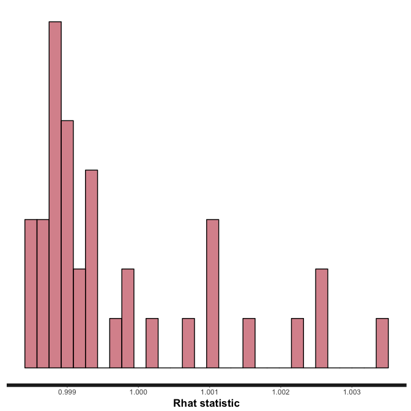
Effective sample size by average sample size
stanplot(model, pars = "^b", type = 'ess')Monte Carlo SE
stanplot(model, pars = "^b", type = 'mcse')Trace plots
if(any( summary(model)$fixed[,"Rhat"] > 1.1)) { # only do traceplots if not converged
plot(model, N = 3, ask = FALSE)
}Further plots
stanplot(model, pars = "^b", type = 'diag')File name
coefs/swed/e5_divorce.rds
Cluster script
opts_chunk$set(echo = FALSE)
clusterscript = str_replace(basename(model_filename), "\\.rds",".html")
cat("[Cluster script](" , clusterscript, ")", sep = "")All episodes
Here we show the effect of paternal age for each episode.